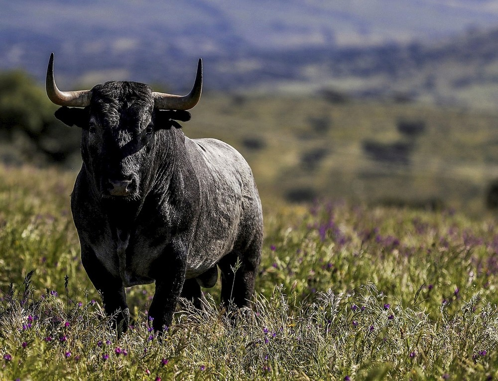
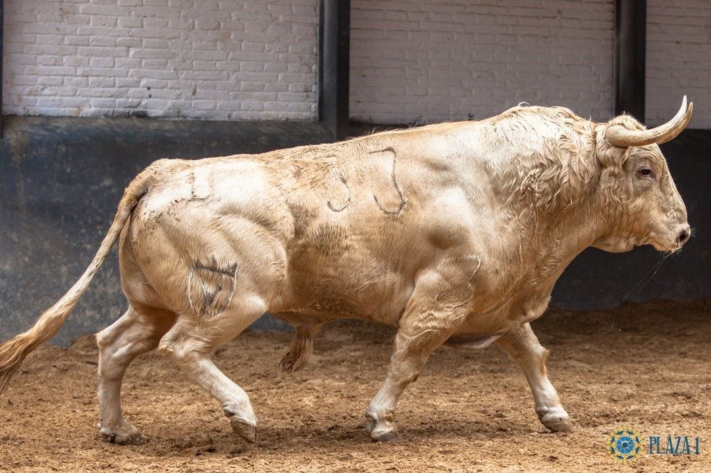

El Toro Bravo
Un animal único cuya bravura, casta y morfología son seleccionadas meticulosamente a lo largo de generaciones.

El toro de lidia es un animal característico de España, conocido por su fuerza, su cornamenta y su comportamiento. Se cría principalmente en grandes fincas llamadas dehesas, donde vive en libertad y se desarrolla en un entorno natural. En esta página conoceremos sus características, las ganaderías más conocidas, los diferentes encastes y algunas de las plazas de toros más importantes del mundo.
Vive principalmente en fincas ganaderas y dehesas, donde dispone de grandes extensiones de terreno para alimentarse y desarrollarse en semilibertad.

Un animal único cuya bravura, casta y morfología son seleccionadas meticulosamente a lo largo de generaciones.
El ecosistema biodiverso ibérico donde el toro se cría en libertad respetando el entorno natural.
Una tradición arraigada en la cultura, la historia y la memoria familiar a través de las ferias taurinas.